CS184 Summer 2025 Homework 3 Write-Up
Link to webpage: web_page_link Link to GitHub repository: git_hub_repo
Overview
In this homework, we implemented a physically-based path tracer that supports both direct and global illumination. We started by generating camera rays and computing intersections with scene geometry, form these principal components we built the rest of our pipeline. Afterward, we implemented and then used a bounding volume hierarchy (BVH) to speed up our ray intersection checks.We explored two methods for direct lighting: uniform hemisphere sampling and importance sampling. The latter gave much cleaner results with fewer samples, especially around soft shadows. Adding global illumination with recursive ray bounces brought scenes to life with more realistic lighting, and we used Russian Roulette to balance quality and efficiency. Finally, adaptive sampling helped us reduce unnecessary work by stopping early when pixel values had already converged.
Overall, we gained a deeper understanding of how light transport works and how each component of the pipeline contributes to producing realistic images.
Part 1: Ray Generation and Scene Intersection
Ray Generation and Primitive Intersection
Our code generates a ray by calculating the direction of our ray using creating a Vector3D with both fov's (h and w) \[x= \left(2 \cdot x - 1\right) \cdot \tan\left(\frac{\text{radians}\left({\text{hFov}}\right)}{2}\right) \] \[y= \left(2 \cdot y - 1\right) \cdot \tan\left(\frac{\text{radians}\left({\text{vFov}}\right)}{2}\right) \] \[z = -1 \] We then normalize this vector and change it from camera space to the world space. We then make a ray object where our origin is our camera position and our direction is the normalized world space direction vector from earlier. We then set our rays min_t and max_t to nClip and fClip respectively. Finally return the ray.
Triangle Intersection Algorithm
For our implementation we used the Moller Trumbore intersection algorithm to determine whether or not a ray intersected a triangle. In essence our implementation checked to see if our ray is intersecting the triangle, the core components used to make this check was barycentric coordinates. We first create a point from the ray onto our plane, then we leverage the fact that we are keeping track of each triangles' points to then use barycentric coordinates to determine if our 'hitpoint' is within the triangle.
We also implemented a sphere intersection method that had a similar goal of determining the existence of an intersection

Part 2: Bounding Volume Hierarchy
Our bounding volume hierarchy algorithm first traverses through all the bounding boxes of the node that is passed in as a parameter. We then compute the difference between the start and end positions of the node iterator, this will give us the distance between the two values.
After that we make our “is leaf” check, this acts as our recursive base case that we’ll be relying on down the line. If we do have a leaf node then we know that its left and right pointers should be set to null and we return the node. Ending the bounding box creation. Allowing for quicker ray tracing.
If our node is in fact not a leaf, then we compute the bounding box of the centroid expanding on each while we iterate through all the centroid.
BBox centroid_bounds ;
for (auto i = start; i != end; i++) {
Vector3D c = (*i)->get_bbox().centroid();
centroid_bounds.expand(c);
}
With this new bonding box we want to use it to compute the new axis we ought to be splitting on. This will be determined by the difference between the centroid bounds' max and min values with respect to each one's x,y,z. Afterwards we set our axis to correspond to whichever axis distance is the greatest. We use this axis to get our midpoint heuristic. And then sorting our start and end points correspondingly.
//calculate split point(midpoint along the selected acis)
double mid = centroid_bounds.centroid()[axis];
//(centroid_bounds.max[axis] + centroid_bounds.min[axis]) / 2.0;
// partition primitives based on their centroid position relative to split point
auto partition_iter = std::partition(start, end, [axis, mid](Primitive* p) {
return p->get_bbox().centroid()[axis] < mid ;
});
Falling back on partitioning in the middle if all else fails. Finally, since we aren't at a leaf node we recursively construct the node's left and right sub-trees
node->l = construct_bvh(start, partition_iter, max_leaf_size); node->r = construct_bvh(partition_iter, end, max_leaf_size);
Part 3: Direct Illumination
The two direct lighting functions, estimate_direct_lighting_hemisphere and estimate_direct_lighting_importance both try to figure out how much light hits a point on a surface, but go about it in different ways.
The estimate_direct_lighting_hemisphere function samples directions randomly over the hemisphere above the surface.
For each sample direction, it traces a ray from the intersection point to see if it hits a light source. If it does, it calculates
how much light is coming from that direction using the BSDF, the emitted light from the hit surface, the cosine of the angle
between the direction and normal, and a constant pdf, averaging the contributions to estimate the direct lighting.
\[ \begin{align*} L_{\text{sample}} &= \frac{f_r(\omega_{\text{out}}, \omega_{\text{in}}) L_i \cos\Theta}{\text{pdf}} \ \end{align*} \]
\[ \text{pdf} = \frac{1}{2\pi} \]
The estimate_direct_lighting_importance function samples directly from the lights on the scene.
Instead of sampling random directions, it asks each light where the light is coming from and how much of it
reaches the surface. For every sample, it checks whether the light is visible by shooting a shadow ray.
If the light isn't blocked, it calculates the BSDF value and scales it by the incoming light, cosine of the angle,
and the sample's pdf (same as in estimate_direct_lighting_hemisphere).
\[ \begin{align*} L_{\text{sample}} &= \frac{f_r(\omega_{\text{out}}, \omega_{\text{in}}) L_i \cos\Theta}{\text{pdf}} \ \end{align*} \]
\[ \text{pdf} = \frac{1}{2\pi} \]
Focus on one particular scene with at least one area light and compare the noise levels in soft shadows when rendering with 1, 4, 16, and 64 light rays and with 1 sample per pixel using light sampling:
Uniform hemisphere sampling tends to produce noisier and less efficient results compared to lighting (importance) sampling, especially in scenes with small or few light sources. Since it samples directions blindly across the entire hemisphere, many rays miss the lights completely and contribute nothing to the final image, which leads to a grainy appearance unless a very high number of samples is used. Lighting sampling, on the other hand, focuses sample directions toward actual light sources, so more of the samples contribute meaningful lighting information. This leads to cleaner, more accurate results with fewer samples, especially when dealing with area lights or scenes where indirect paths to the lights are less likely to be randomly hit.
Part 4: Global Illumination
Images rendered with global (direct and indirect) illumination (1024 samples per pixel, Number of samples per area of light is 1, Depth per ray of light is 5)1024 global illumination bunny
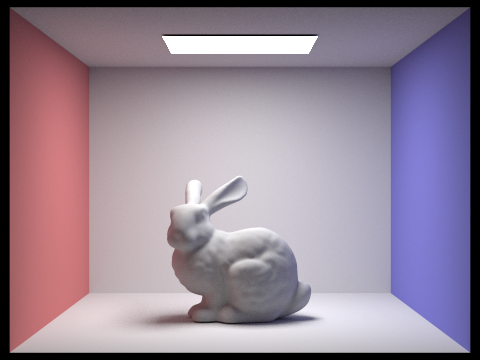1024 global illumination spheres
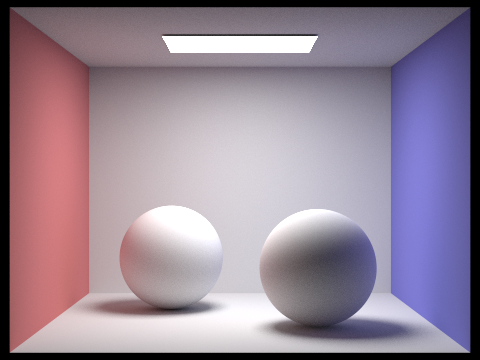Comparison of rendered views first with only direct illumination, then only indirect illumination (1024 samples per pixel)
Only direct illumination
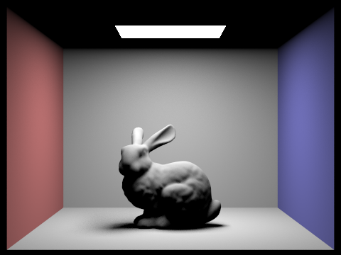Only indirect illumination
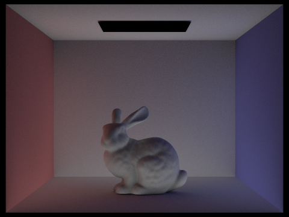| max_ray_ depth = 0 |
max_ray_ depth = 1 |
max_ray_ depth = 2 |
max_ray_ depth = 3 |
max_ray_ depth = 4 |
max_ray_ depth = 5 |
|
|---|---|---|---|---|---|---|
| isAccumBounces = false | 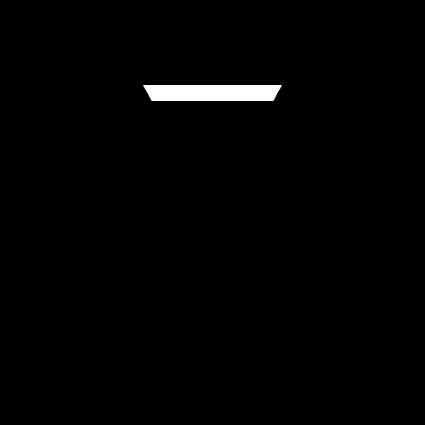 | 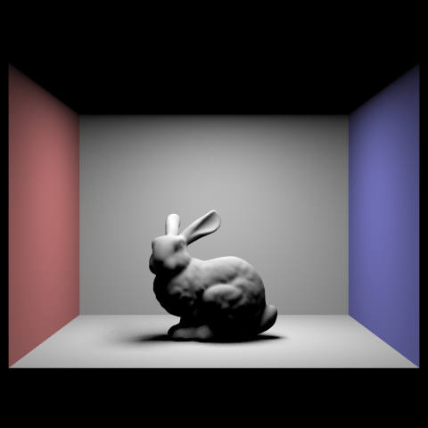 | 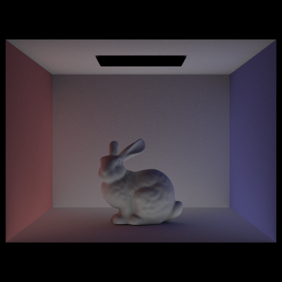 | 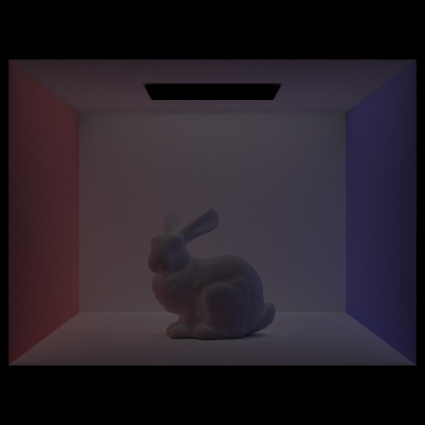 | 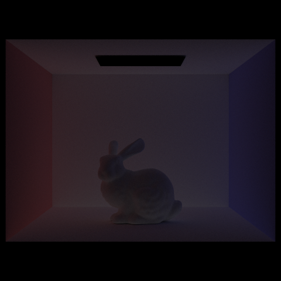 | 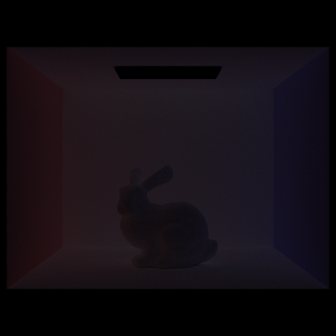 |
| isAccumBounces = true | 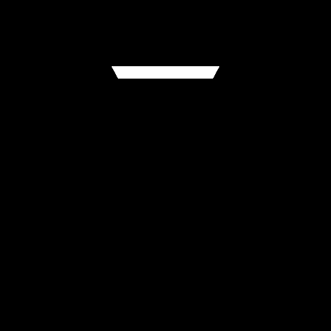 | 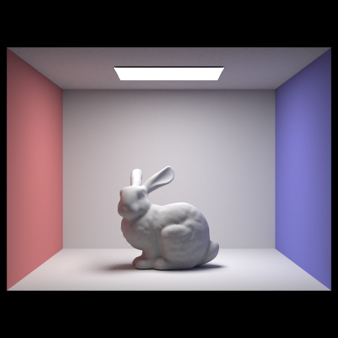 | 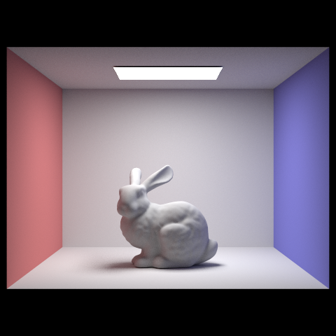 |
When rendering CBbunny.dae with max_ray_depth set to 0 through 5 and isAccumBounces set to false, each image shows only the m-th bounce of light. At the second bounce count, light has already reflected off one surface before bouncing again and reaching the camera, adding subtle details like soft shadows, indirect illumination in corners, etc. At the third bounce, the image becomes noticeably darker, because after two reflections, the contribution of light of the third bounce is weaker. Compared to rasterization, which doesn't simulate any of this indirect light, even the darker third bounce adds realism by capturing subtle lighting behavior that makes the scene feel more natural.
Russian Roulette Rendering: For CBbunny.dae, output the Russian Roulette rendering with max_ray_depth set to 0, 1, 2, 3, 4, and 100(the -m flag). Use 1024 samples per pixel:
| max_ray_ depth = 0 |
max_ray_ depth = 1 |
max_ray_ depth = 2 |
max_ray_ depth = 3 |
max_ray_ depth = 4 |
max_ray_ depth = 100 |
|---|---|---|---|---|---|
| 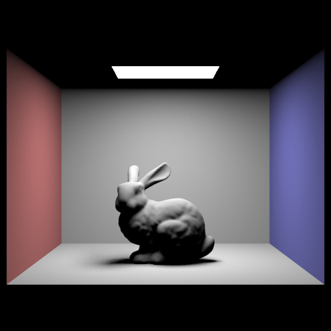 | 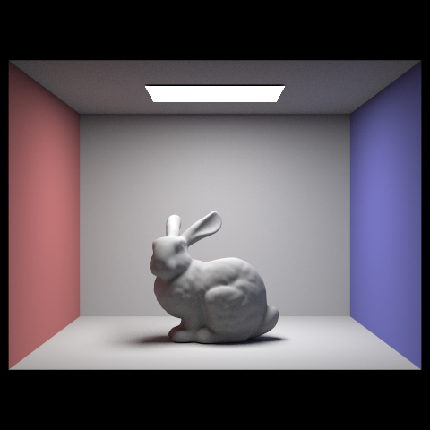 |
Pick one scene and compare rendered views with various sample-per-pixel rates, including at least 1, 2, 4, 8, 16, 64, and 1024. Use 4 light rays:
| samples per pixel = 1 |
samples per pixel = 2 |
samples per pixel = 4 |
samples per pixel = 8 |
samples per pixel = 16 |
samples per pixel = 64 |
samples per pixel = 1024 |
|---|---|---|---|---|---|---|
| 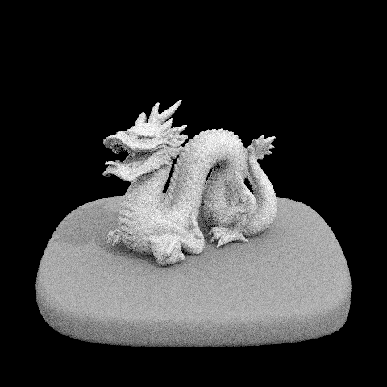 |
The at_least_one_bounce_radiance function estimates indirect lighting by recursively bouncing rays through the scene. It first adds direct lighting if needed, then samples the BSDF to get a new direction. A new ray is traced from the intersection point, and if it hits something, the function calls itself again to get the incoming radiance. The result is scaled using the BSDF, cosine term, and PDF. If the ray misses and there's an environment light, it samples that instead. Russian roulette is used to probabilistically end paths and keep the computation efficient.
Part 5: Adaptive Sampling
The purpose of adaptive sampling is that it allows us to terminate sampling earlier using statistical methods. For pixels that converge faster, we check to see if they have remained the same, we perform this check when we have iterated over a pixel a predetermined amount of times. While iterating we should be keeping track of the sum of the illumination of the rays as well as the summation of the illumination values squared.
We use these values to then compute the mean and the variance of our current number of samples
\[ \mu = \frac{s_1}{n} \] \[ \sigma^2 = \frac{1}{n - 1} \cdot \left( s_2 - \frac{s_1^2}{n} \right) \]If we find that our I value is less than the maxTolerance multiplied by the mean of our samples, we can assume, with a 95% confidence, that this pixel's value has converged and we can exit our current loop.
Our confidence interval, 95%, is computed by calculating 1.96 times the std over the sqrt of the numer of samples
\[ I = 1.96 \cdot \frac{\sigma}{\sqrt{n}} \]Heres is a table of our 2048 renders called using -t 8 -s 2048 -a 32 0.05 -l 1 -m 5 -r 480 360